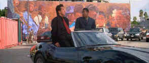

| Rush
Hour (SE)/C+,A |
| New Line/1998/97/ANA 2.35 |
Jackie Chan is still trying to find the right formula
for the American movie market. Rush Hour teams him with motor mouth Chris Tucker as
two detectives trying to save a young Chinese kidnap victim. Their motivations are as
diverse as their personalities. The eleven year old girl is the daughter of the Chinese
Consul newly arrived from Hong Kong for a life in the United States. Jackie is brought
over by the Consul in a desperate attempt to bolster the forces of the FBI team. And
Tucker, he’s the LAPD cop who’s supposed to keep Jackie away from the action.
Good choice guys!
|

|
Jackie and Chris , a new buddy
concept. ©New Line |
Rush Hour tries hard
to capitalize on comic chemistry between it’s two stars. They are certainly a
contrasting pair. Tucker’s hyper-kinetic animation emanates from mouth and body while
Jackie quietly charms and gracefully jumps through the paces of action hero.
Unfortunately, Rush Hour is short on the stunts that are signatures of Jackie Chan
vehicles. The story is okay, but the focus is more on the Tucker/Chan relationship. The
excellent Tom Wilkinson is wasted in the villain’s role. In fact, a good villain is
something sorely missing from Rush Hour.
Director Brett Ratner has a good visual style but he seems like
his vehicle runs rather out of control through this Rush Hour. He does convey a
sense of fun tot he proceedings and this helps salvage the limited story line. The Lalo
Schifrin score is lively and helps propel the action. Adam Greenberg’s photography is
appropriately glossy.
This DVD from New Line has reference written all over it. The
source material is perfect for transfer to video. The snappy photography is transferred as
slick as a glossy magazine page. The anamorphic image is consistently sharp. The comic
book colors are exciting and dynamic. And it’s a packed special edition DVD as well.
Director Brett Ratner provides one audio commentary and composer (Peter Gunn) Lalo Schifrin
provides an additional commentary over an isolated score. There are deleted scenes, a
featurette, a music video and a student film that helped launch Brett Ratner’s
career. On the DVD Rom front, Rush Hour offers some additional special features
for the PC. Any scene can be accessed directly form the screenplay. You can print any part
of the screenplay, there’s an interactive game and lots more info on Jackie Chan and
Chris Tucker. Huzzahs to New Line.
|
|
|
|

Selections from the Feature Archive
include articles on Akira Kurosawa, Frank
Darabont, Blonde Bimbos, Hollywood Street Gangs, or Vietnam: The
Hollywood Pariah, and many more....
Capturing Kennedy

Steven Culp extracts the
essence of Robert F. Kennedy in Roger Donaldson's outstanding feature Thirteen Days. Culp recently shared
insights on the performance and his career with Films on Disc. Click the image for more.

 Gary Morris's insightful publication Bright Lights
Film Journal turns the celluloid in films from a unique perspective. Click on the image above
for more pure movie views. Gary Morris's insightful publication Bright Lights
Film Journal turns the celluloid in films from a unique perspective. Click on the image above
for more pure movie views.

Nearly 40 key software and
hardware companies representing leading consumer electronics giants, major movie studios home video
and music video units have joined forces to establish the DVD Video Group.

DVD Easter Eggs
How do you take them? Fried or scrambled. Get the secrets
here.

Excellent resource with DVD reviews, forum and more.
|